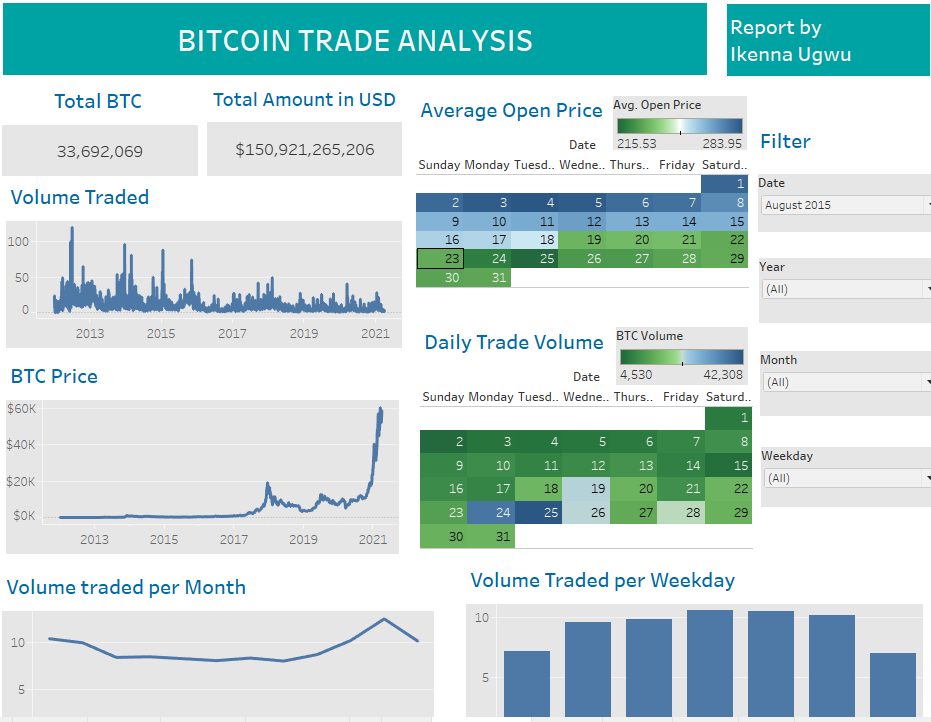

About this Project
Background
Analysis on Bitcoin trade from 2012 to 2021
Goal
The main goal was to conduct a descriptive analysis to identify trends and gain insights for informed decisions on Bitcoin trading.
Methodology
Data was obtained from Quantum Analytics Google Drive in CSV format. It was then uploaded to Tableau after being confirmed clean using Excel spreadsheets. The data was analyzed, and a dashboard was created using various charts and visualizations.
Key Insights
Metrics
Total BTC traded was approximately 33 million, with a total trade value of around 150 million USD.
Price Trends
The price remained below 1000 USD from 2012 to early 2017, after which it rapidly surged to 19,000 USD in December 2017. It fluctuated until October 2020 when it reached an all-time high of 60,000 USD.
Daily Trends
Saturdays had the highest trade traffic, with about 4 million trips. There was a gradual rise from Mondays to Saturdays, followed by a drop until the next Monday.
Trade Volume Trends
Over the years, the volume of Bitcoin traded has decreased, with occasional progressively decreasing spikes. Trade volume remained relatively stable throughout the year, gradually rising from September to November, and dropping in December. Overall, trade volume remained relatively consistent throughout the week but reduced during the weekends.
Conclusion
The value of BTC shows an upward trend but can fluctuate. Trading from September to November can be profitable as it witnesses the highest trade activity. The decreasing trade volume over the years can be attributed to the increasing value and growing scarcity of the coin.
Note: This report is for informational purposes only and does not constitute financial advice.